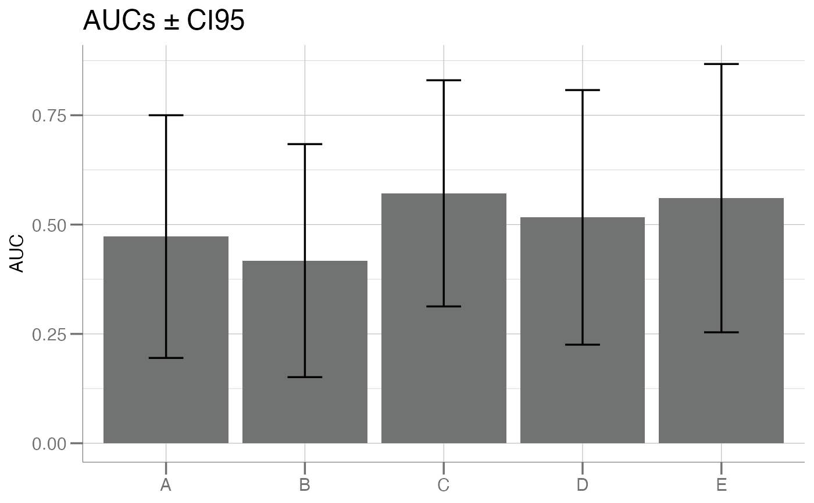
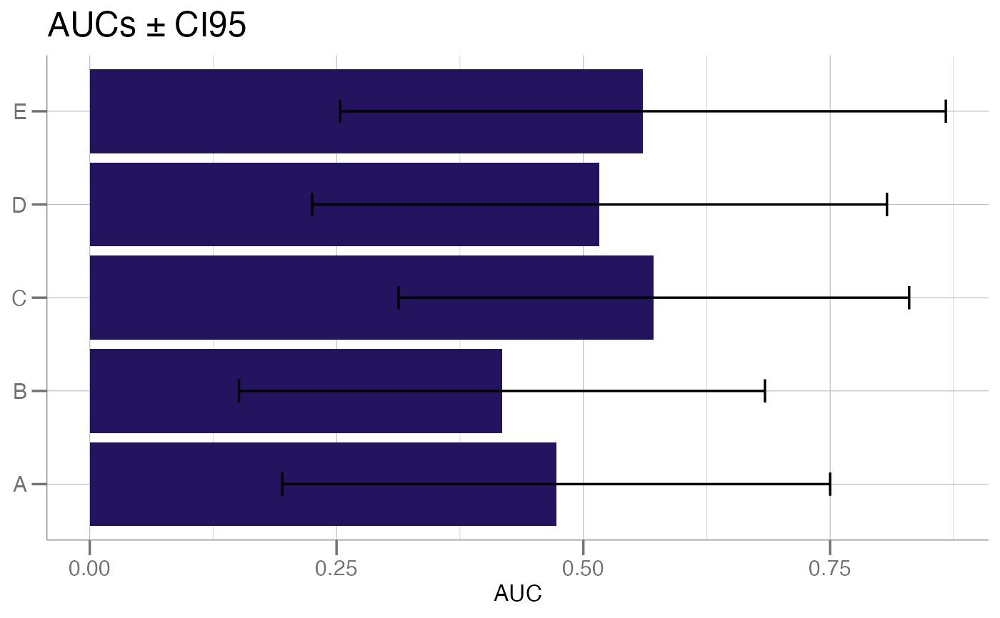

Plot AUCs and Error Bars
barplot_auc.RdPlots a list of AUCs as barplots and added error bars for each
corresponding to the 95% confidence interval for each. See
calc_emp_auc() for how to generate the AUCs and CI95s.
Usage
barplot_auc(
data,
color = col_palette$lightgrey,
flip = FALSE,
main = bquote("AUCs ± CI95")
)Arguments
- data
A
data.frameobject of AUCs and 95% confidence intervals. Each row is the result of a call tocalc_emp_auc()withci95 = TRUEand converted to a single rowdata.frame. See example.- color
Character or numeric vector containing colors for each of the barplots, as used by
ggplot2::ggplot(). Vector length should match the number of rows indata. Colors are recycled as necessary.- flip
logical(1). Should the axes be flipped? See example.- main
character(1). Optional string for the plot title.
Value
A ggplot2::ggplot() plot.
Examples
# create random AUCs and CI95s
withr::with_seed(22, {
true <- sample(c("control", "disease"), 20, replace = TRUE)
auc_df <- lapply(1:5, function(.x) {
data.frame(calc_emp_auc(true, runif(20), "disease", ci95 = TRUE))
}) |> do.call(what = rbind)
})
auc_df
#> auc lower.limit upper.limit
#> 1 0.4725275 0.1950289 0.7500260
#> 2 0.4175824 0.1511713 0.6839936
#> 3 0.5714286 0.3128223 0.8300349
#> 4 0.5164835 0.2253874 0.8075796
#> 5 0.5604396 0.2536954 0.8671838
barplot_auc(auc_df)
# Set rownames to identify the bars
rownames(auc_df) <- LETTERS[1:nrow(auc_df)]
barplot_auc(auc_df)

# Flip axes
barplot_auc(auc_df, color = libml:::col_palette$purple, flip = TRUE)
